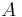
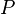
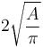
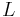
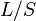
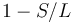
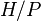
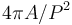

Shape Filter
| Shape Filter Plugin (ImageJ/Fiji) | |
|---|---|
| Author | Thorsten Wagner |
| Maintainer | Thorsten Wagner |
| File | shape_filter_x.y.z.jar [1] |
| Source | Github [2] |
| Latest version | v1.4.2 (14 July 2016) |
| Development status | active |
General Description
The ImageJ Shape Filter Plugin use the [ij-blob] library to characterize and filter objects in binary scenes by its shape. Therefore, several features are calculated as shown below.

If you like to cite the Shape Filter plugin in a scientific publication, please cite:
Wagner, T and Lipinski, H 2013. IJBlob: An ImageJ Library for Connected Component Analysis and Shape Analysis. Journal of Open Research Software 1(1):e6, DOI: http://dx.doi.org/10.5334/jors.ae
Shape Features
- Area (): The area enclosed by the outer contour of an object.
- Area Convex Hull (
 ): The area enclosed by the convex hull of the outer contour of an object.
): The area enclosed by the convex hull of the outer contour of an object. - Perimeter (): The perimeter of the outer contour of an object.
- Perimeter Convex Hull (
 ): The perimeter of the convex hull of the particle.
): The perimeter of the convex hull of the particle. - Feret Diameter: The maximum distance between the two parallel tangents touching the particle outline in all directions.
- Min. Feret Diameter: the minimum distance between the two parallel tangents touching the particle outline in all directions.
- Max. Inscr. Circle Diameter: The diameter of the maximum inscribed circle.
- Area eq. circle diameter: Equivalent circle diameter 
- Long Side Minimum Bounding Rectangle (): The larger side of the minimum bounding rectangle.
- Short Side Minimum Bounding Rectangle (
 ): The smaller side of the minimum bounding rectangle.
): The smaller side of the minimum bounding rectangle. - Aspect Ratio: Defined as 
- Area to Perimeter Ratio: Defined as

- Circularity: Defined as

- Elongation: Defined as 
- Convexity: Defined as 
- Solidity: Defined as

- Number of Holes: The number of holes inside an object.
- Thinnes Ratio: Inverse proportional to the circularity. Furthermore it normed. It is defined as 
- Contour Temperatur: It has a strong relationship to the fractal dimension, defined as

- Orientation: The orientation of the major axis from in grad (measured counter clockwise from the positive x axis).
- Fractal Box Dimension: Estimated fractal dimension by the box count algorithm. The default box-sizes are “2,3,4,6,8,12,16,32,64”.
Installation
You could simply use our update site "Biomedgroup" to install the shape filter plugin.